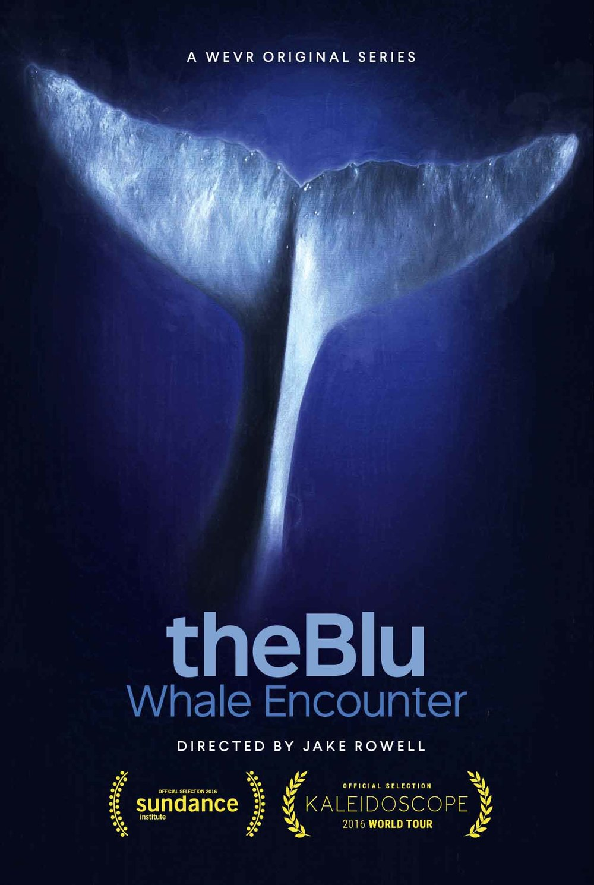

theBlu
theBlu
Details
|  | |
| Spielzeit | Nicht gespielt |
| Letzte Aktivität | 18.09.2019 0:38:27 |
| Hinzugefügt | 04.11.2021 0:13:57 |
| Modifiziert | 12.12.2022 0:53:28 |
| Fertigstellungsstatus | Not Played |
| Bibliothek | Xbox |
| Quelle | Xbox |
| Plattform | PC (Windows) |
| Veröffentlichungsdatum | 05.04.2016 |
| Community Bewertungen | 81 |
| Kritiker Punkte | |
| Benutzerwertung | |
| Genre | Adventure Casual Indie Simulation |
| Entwickler | Wevr, Inc. |
| Verleger | Wevr, Inc. |
| Eigenschaft | Single Player VR Support |
| Links | Communityhub Diskussionen Guides Neuigkeiten Shopseite PCGamingWiki |
| Tag | Adventure Casual Experience Horror Indie Psychological Horror Simulation Underwater VR |
Beschreibung
theBlu 1.3 Released!
Hola theBlu fans!
We just pushed out the 1.3 Update to all users. This is a bigger update than usual with a new mode (Preview Mode), and a couple of fixes! We think you'll dig Preview Mode- a unique new way to demo theBlu to family and friends.
New Features & Additions:
- Preview Mode is now available on the menu. Preview Mode will give you a shortened, two minute version of the Reef Migration or Luminous Abyss. It has all the interactivity, audio and events from the full experience.
- Please note that Inspector & Ambient Mode will NOT work with Preview Mode.
- To use Preview Mode, just toggle it "On" on the menu. By default, it will be off to avoid any confusion.
- When entering a scene in Ambient Mode you'll now see the Ambient Mode icon below the logo.
As per usual, if you see any issues or hit any bugs, don't hesitate to let us know-- email us at support@wevr.com. And keep sending us those amazing screenshots! We love seeing theBlu from a new perspective!
About the Game
theBlu: is a deeply immersive VR series that allows audiences to experience the wonder and majesty of the ocean through different habitats and come face to face with some of the most awe inspiring species on the planet. The series, which is directed by Jake Rowell (Call of Duty, Final Fantasy, Superman Returns), has been designed as beautiful moments in passing or a collection of memories that powerfully tap into the vast potential of VR. The debut episode, featuring an incredible close encounter with an 80 foot whale, is already recognized as one the most iconic room scale VR experiences to date (a Sundance Film Festival 2016 selection). Additional episodes in this bundle take place on a teeming coral reef and in the very deepest region of the ocean. Gain access to new modes of discovery in each episode. Slow time and capture pictures in Inspector Mode, and return to a meditative version of each location in Ambient Mode.The first three episodes of theBlu, contained in this bundle, are:
- Whale Encounter
An undersea encounter with the largest species on earth. - Reef Migration
Witness the magnificence of an undersea migration on the edge of a coral reef. - Luminous Abyss
Venture into the deepest region of the ocean to discover the iridescent abyss.